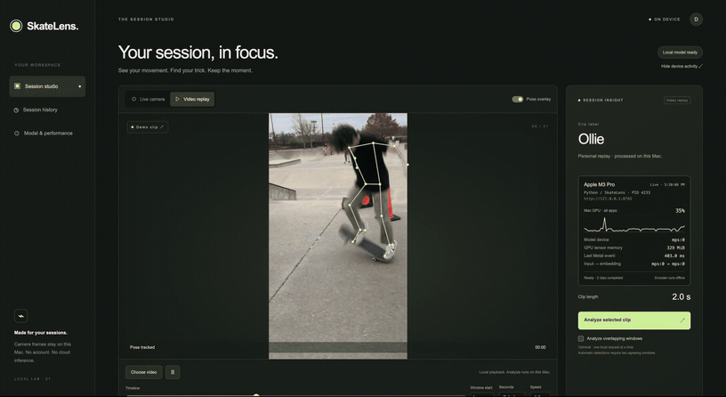
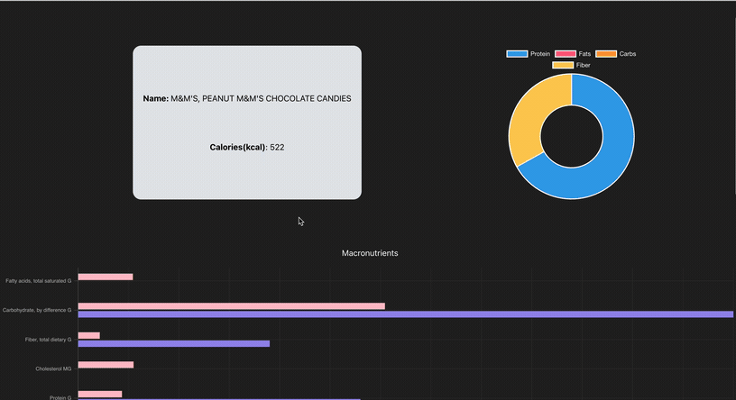
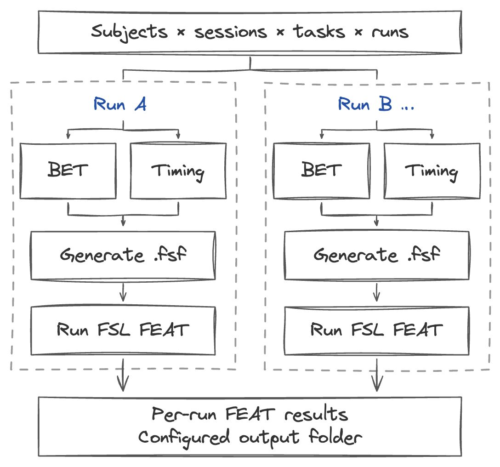

Some Projects
- SkateLens
- Video replay, pose tracking, and skateboard trick inference on Apple silicon.

- Nutrition Search
- Food search with barcode scanning and nutrient charts.

- fMRI Pipelines
- Python workflows for fMRI preprocessing at CNAN Lab.
